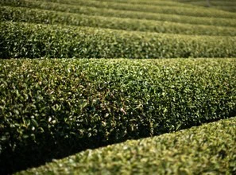

YOUR BUSINESSお客様のビジネス
International buyer海外バイヤー
Product · Quality · Target price
Volume · Packaging · Destination
Required documents商品・品質・目標価格
数量・包装・仕向地
必要書類
ACCESS TO JAPAN.日本の供給力を、世界へ。
One Japan-side partner connecting international buyers with Japanese producers, manufacturers and supply partners.海外バイヤーと日本の生産者・メーカー・供給パートナーをつなぐ、日本側のワンストップ窓口。

01THE BUSINESS MODEL事業モデル
Your requirements lead the search. We coordinate the right Japanese supply options for your evaluation.お客様の要件を起点に、適切な日本の供給元を探し、比較・評価いただける選択肢を提案します。
YOUR BUSINESSお客様のビジネス
Product · Quality · Target price
Volume · Packaging · Destination
Required documents商品・品質・目標価格
数量・包装・仕向地
必要書類
ONE JAPAN-SIDE CONTACT日本側の一元窓口
Japan sourcing desk日本調達デスク
Sourcing · Communication
Product matching · Commercial coordination
Export coordination調達・コミュニケーション
商品選定・取引条件の調整
輸出調整
MATCHED TO YOUR REQUIREMENT要件に合わせた供給元
Producers · Manufacturers
Wholesalers · OEM partners生産者・メーカー
卸売業者・OEMパートナー
Products from different sources are not blended or substituted without buyer approval.異なる供給元の商品を、お客様の承認なく混合・代替することはありません。
02JAPAN SOURCING NETWORK日本の調達ネットワーク
Selected producers, wholesalers and OEM-capable partners, matched by application, quality, target price and volume.用途、品質、目標価格、数量に応じて、生産者・卸売業者・OEM対応パートナーを選定します。
CURRENT SOURCING ORIGINS現在の調達産地
Export / wholesale / OEM business hub, not a tea origin.輸出・卸売・OEMの事業拠点。茶の産地を示すものではありません。
Origins and capabilities are available through selected supply partners, not FHM-owned farms. Availability, documentation and organic certification requirements are confirmed per product and destination.産地・対応内容は選定した供給パートナーを通じたもので、FHM所有の農園ではありません。供給可否、書類、有機認証要件は商品・仕向地ごとに確認します。

Illustrative imagery. Not supplier facilities or confirmed product packaging.写真はイメージです。実際の仕入先施設や確定済み製品包装ではありません。
03HOW IT WORKSお取引の流れ
Application, quality, volume and destination.用途・品質・数量・仕向地をお知らせください。
We approach suitable supply partners.要件に合う供給パートナーを探します。
Compare product specifications and commercial options.商品仕様と取引条件を比較します。
Evaluate samples and confirm the quotation.サンプルを評価し、見積条件を確認します。
Coordinate shipment and discuss recurring requirements.出荷を調整し、継続調達の要件を確認します。
Samples may be charged. International supply is subject to destination requirements, logistics, specifications and availability.サンプルは有償となる場合があります。海外供給は仕向地の要件、物流、仕様、供給状況により確認が必要です。

ILLUSTRATIVE PRODUCT IMAGE商品イメージ
04CURRENT CORE CATEGORY現在の中核カテゴリー
The right tea for the way you use it. Matched by application, taste, colour, quality requirements and volume.使い方に合った日本茶を。用途、味わい、色、品質要件、数量に応じて提案します。
Bakery · Desserts · Manufacturing製菓・デザート・食品製造
Cafés · Foodservice · Beveragesカフェ・外食・飲料
Tea service · Premium cafés · Hospitality茶の提供・高級カフェ・ホテル
BULK / PRIVATE LABEL / RETAIL PACK / HOSPITALITY SINGLE SERVEバルク / プライベートラベル / 小売包装 / ホテル向け個包装
Request product options & samples商品・サンプルについて相談する05SUPPLY SCALE調達規模
1 kg+1kgから
10–50 kg10～50kg
100 kg+100kg以上
Hundreds of kg数百kg規模
Ton-scale opportunitiesトン規模の案件相談
Capacity is confirmed per product, specification, production allocation and timing. Ton-scale opportunities are evaluated through selected Japanese supply partners.供給量は商品、仕様、生産割当、時期に応じて個別に確認します。トン規模の案件は、選定した日本の供給パートナーを通じて検討します。
06PRIVATE LABEL / OEMプライベートラベル / OEM
Japanese products, prepared for your business. Explore packaging and private label options through applicable partners.日本の商品を、お客様のビジネスに合う形へ。対応パートナーを通じて、包装やプライベートラベルの選択肢を検討します。
Options depend on product, supplier, specification and volume.対応内容は商品、供給元、仕様、数量により異なります。

Illustrative imagery. Not supplier facilities or confirmed product packaging.写真はイメージです。実際の仕入先施設や確定済み製品包装ではありません。
07BEYOND MATCHA抹茶の、その先へ
Matcha is our current core category. Japan sourcing is the broader capability.現在の中核は抹茶・日本茶。事業の軸は、日本からの調達です。
Tell us what you need. We can explore Japanese food, beverage and specialty product sourcing based on buyer requirements.ご希望をお聞かせください。日本の食品・飲料・特産品について、要件に基づき調達の可能性を検討します。
Additional products are not confirmed until supplier, specification and availability are verified.追加商品の取扱いは、供給元・仕様・供給可否の確認後に確定します。
08WHO WE WORK WITH対象となるお客様
Potential buyer segments. These are not representations of existing customers.想定するお客様の業種です。既存顧客の実績を示すものではありません。

09YOUR PARTNER IN JAPAN日本側のパートナー
Yoshitaka Fukuda福田 喜天
Founder, Fukuda Hotel Management LLC合同会社フクダホテルマネジメント 代表
Time in Hong Kong, education in Switzerland and California, and business experience in Tokyo shape a perspective that crosses borders.香港で過ごした幼少期、スイスとカリフォルニアでの教育、東京でのビジネス経験。国や文化を越えてきた経験が、事業の視点につながっています。
A UC Berkeley graduate with experience at Deloitte Tohmatsu Consulting in Tokyo, Yoshitaka founded FHM in Japan. In the Food & Beverage Division, he connects buyer requirements with Japanese supply through sourcing, product matching and commercial coordination.UC Berkeleyを卒業し、東京のデロイト トーマツ コンサルティングでの勤務経験を持つ福田が、日本でFHMを創業。食品・飲料事業では、調達、商品選定、取引調整を通じて、海外バイヤーの要件と日本の供給をつなぎます。
10LET’S START A CONVERSATIONまずは、ご相談ください
Share your requirements. We will explore the right supply options in Japan.ご要件をお聞かせください。日本国内で適切な供給の選択肢を検討します。
TELL USお知らせいただきたい内容
Opens your email app with a ready-to-complete brief.入力用のひな形を付けて、メールアプリを開きます。
yfukuda@fukudahotel.com